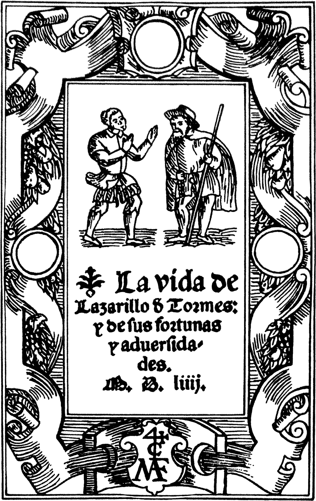
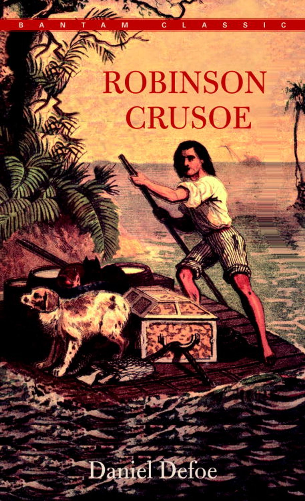

Seccion Novelas
El Cuento de Genji
Considerada la primera novela de la historia, narra la vida y romances del príncipe Genji en la corte japonesa.

Lazarillo de Tormes
La obra fundacional de la novela picaresca, donde un joven usa su astucia para sobrevivir a varios amos.

Don Quijote de la Mancha
La primera novela moderna. Una parodia sobre un hidalgo que se cree caballero andante. Explora la locura y el idealismo.
La Princesa de Cléveris
Una novela pionera del análisis psicológico, centrada en los conflictos internos de su protagonista en la corte francesa.

Robinson Crusoe
Una de las primeras novelas inglesas. Narra la historia de un náufrago que sobrevive 28 años en una isla desierta.
Las relaciones peligrosas
Obra maestra del género epistolar que expone la manipulación y crueldad moral de dos aristócratas libertinos.